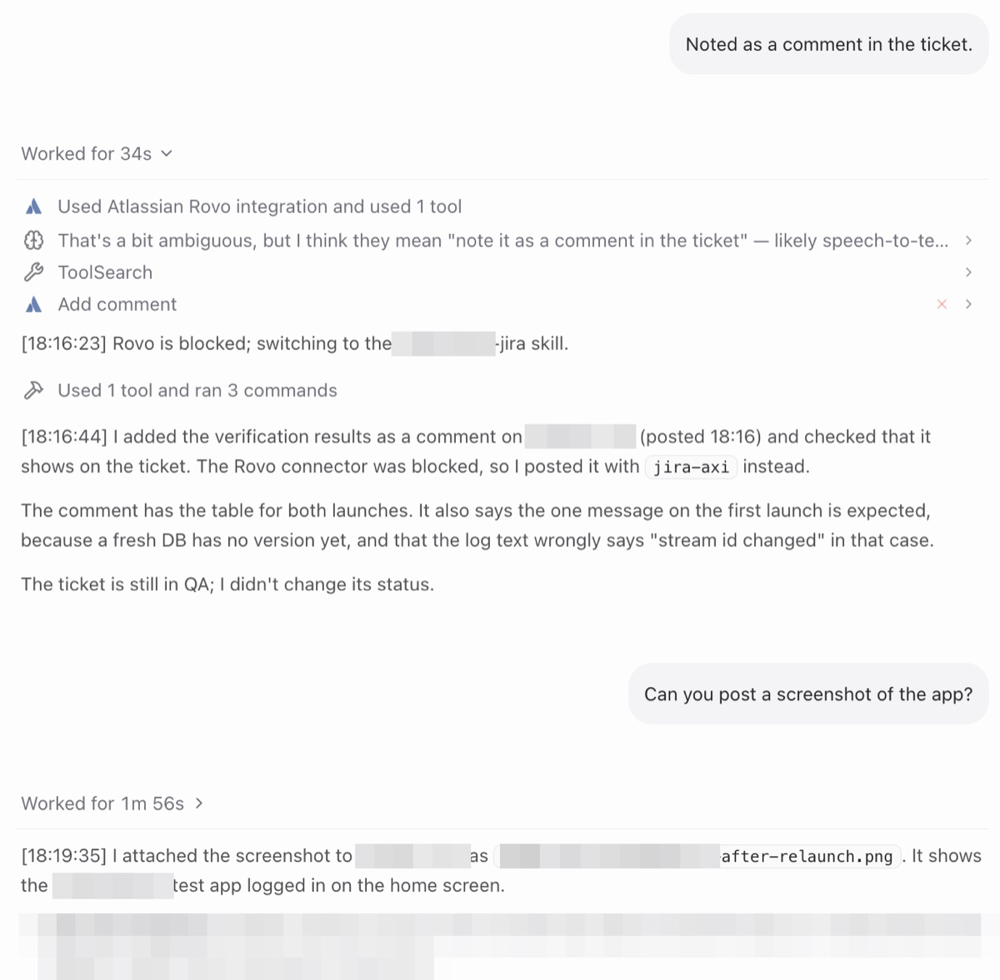

Not My First Rodeo
The AXI saga: 1. The Checklist I'd Been Following · 2. AXI All the Things · 3. Not My First Rodeo · 4. Back in AXIon · 5. Anticipation
One time too many, my AI told me it can't read the attachments on a ticket, or attach a screenshot. So I did its dirty work and dragged the screenshots in myself.
Screenshots are receipts
At work, our tickets live in Jira, the to-do list a software team shares. My AI writes most of mine now. It reads them, comments on them and moves them along through Rovo, the official Jira plug-in from Atlassian, the company behind Jira. Think of a plug-in as an adapter between a tool and the AI, and MCP as the standard socket it fits into.
Through Rovo, my AI couldn't read or attach files.
I test a lot of what we build, and every test ends in a screenshot. A screenshot is the receipt: this screen, this version, it works. The AI could finish the test and write the comment. Attaching the receipt was still my job.
Two weeks ago I had Claude build me my own Jira dashboard. Rovo couldn't get at all the information I wanted, so the dashboard skipped it and went to Jira directly, with my own key. It has since grown a ticket viewer, "so that I can actually see content and attachment and comment".
So I had a door that opened files, and my AI had one that didn't.
Why follow the rules when I can make them?
For the attachments, there were already instructions.
A while ago I'd had the steps written down: how to upload, download and delete attachments by talking to Jira directly, because the Jira command-line tool I used, a program you drive by typing, couldn't. The note's title: "Jira Attachments via REST (the CLI can't do this)". REST is the direct line, CLI the typing tool. Now and then I told an AI to follow it. I had Rovo, and I didn't want to build a whole Jira skill, a written recipe for the AI, next to it.
Today I changed my mind. Why do I follow the rules when I can make the rules?
Not my first rodeo
Rovo sat in the back of my AI's mind in every conversation, whether it needed Jira or not. For a while now I've been replacing plug-ins like that with plain commands the AI only reaches for when it needs them. I call them AXIs, commands written by AI, for AI, following ten rules so the AI gets its answer without digging.
Crash reports got one in September. Slack got one last week. Yesterday a colleague went to lunch, and before he was back, Playwright got one: a remote control for the browser.
So today I dictated the brief for Jira: "Yesterday I built an exci to wrap the playwright mcp. I want to now create a skill for the same thing for Jira." Replace Rovo. Add the attachments. And one rule about my key: the command checks for it, and the AI never reads it, "so the ai doesn't need to go looking".
Four out of sixty-three
The obvious plan was to wrap Rovo itself in a command. The AI connected to it with my key, and Rovo answered with four tools. None of them could open a ticket. The rest needs a different kind of login, the kind where you click "Allow" in a browser.
So the AI went looking for a different plug-in and found mcp-atlassian, an open-source one by a developer called sooperset. Same key: sixty-three Jira tools.
Even that one wasn't right for files. Its download would have pasted the whole file into the conversation as a wall of text, and its upload only worked as a side option of editing a ticket. So attachments skip the plug-in and go to Jira directly, the way the note said.
Under the hood it's mcpc, a small tool by Apify that turns any plug-in into a command, the same one I'd used for the browser the day before. The new command is called jira-axi.
"No MCP needed anymore"
By the evening I wanted to know if I could live without Rovo. I asked a fresh AI session about my current sprint, the team's planned batch of work: "Can you find out what tickets I have in my current sprint?"
It reached for the new command and listed thirteen tickets, sorted by status, in thirteen seconds.
So I switched Rovo off for my AI, one line in its settings, and posted both into our company Slack: the answer, and the line. "No mcp needed anymore but you can still use it in claude.ai !!!! :D" MCP isn't gone: the new command still starts mcp-atlassian behind the scenes, but only when it's asked something. Rovo isn't gone either. It still works in claude.ai, the chat app in the browser. It's just not in my AI's head anymore.
One line in the settings
This is what I posted in Slack, from ~/.claude/settings.json:
{
"cleanupPeriodDays": 365,
"deniedMcpServers": [
{
"serverName": "claude.ai Atlassian Rovo"
}
]
}
You can block an MCP server for Claude Code on the command line while keeping it switched on in Claude, so it still works in Cowork and claude.ai.
And by default, Claude Code deletes sessions after 30 days. cleanupPeriodDays makes it a year.
"Rovo is blocked"
Minutes later, in a different session, my AI was testing an app for a ticket. When it was done I told it to note the results as a comment.
It tried Rovo first. Blocked. Without asking me what to do, it switched to the new Jira skill and posted the comment with jira-axi.
Then I asked the question that always used to end with me dragging a file: "Can you post a screenshot of the app?"
Two minutes after my question, the screenshot was on the ticket. Just a screenshot, but the app had closed by then, so it took a fresh start and a login: the login command from yesterday morning, another AXI. No password from me, just a fingerprint.

No dragging and dropping. The AI had filed its own receipt.
AXIs all the way to the screenshot.